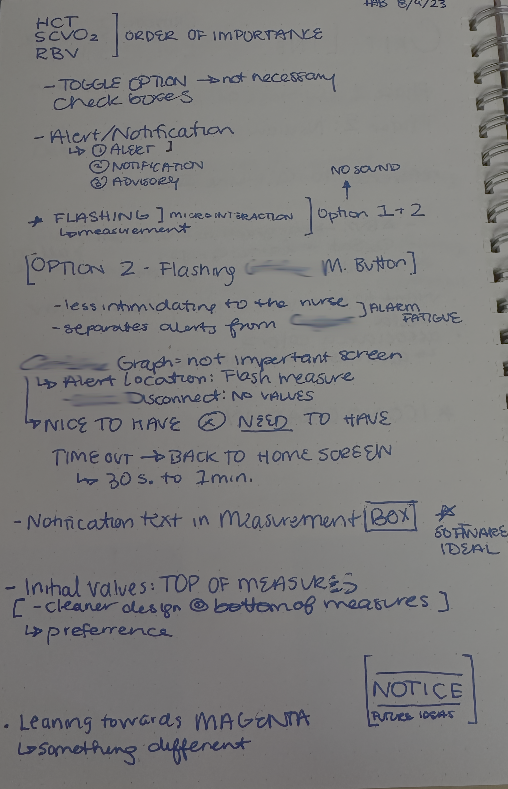
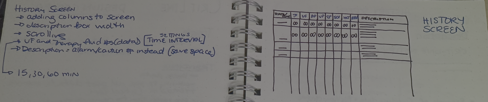

The Challenge
The goal wasn't to add a feature. It was to remove a screen.
During Continuous Renal Replacement Therapy in the ICU, nurses managed two separate non-integrated displays simultaneously — a primary patient monitor and a secondary third-party sensor showing hematocrit, SpO2, and blood volume change. In one of medicine's most demanding environments, mentally cross-referencing two screens in real time was both a cognitive burden and a patient safety risk. The objective: eliminate the secondary display entirely by integrating its data stream into the primary monitor.
Problem Definition
Two compounding problems. One design constraint that shaped everything.
Problem 01
Physical Clutter
The secondary sensor occupied space on an already-crowded IV pole — a meaningful obstacle in an environment where spatial real estate is a safety variable.
Problem 02
Cognitive Friction
Nurses had to mentally cross-reference numerical and trending data across two non-integrated screens to form a complete picture of patient status — increasing the risk of missed information under pressure.
The design constraint: integrate a new data stream into an established, trusted interface without disrupting the existing visual hierarchy nurses depend on under pressure. Adding new data couldn't cost existing clarity.
Research & Discovery
Four findings that defined the integration logic
Research in a simulated ICU environment with 5 ICU nurses and 2 nephrologists — using contextual inquiry, workflow mapping, semi-structured interviews, and heuristic analysis of the primary monitor — surfaced four findings that directly drove the design.
Finding 01
The Vigilant Observer Pattern
Nurses monitor continuously while performing other tasks. New data must be visible on the default screen — navigation to find it is clinically unacceptable.
Finding 02
Trend Over Point-in-Time
A single value is insufficient. Nurses need trend data to differentiate a gradual drift from a rapid, clinically significant change requiring immediate action.
Finding 03
Trust Follows the Host System
Alerts from the primary monitor were trusted above those from the secondary device. New alerts had to inherit the primary system's visual and behavioral language to be acted upon.
Finding 04
Full Integration, Not Reduction
The secondary screen was universally cited as unwanted clutter. Partial integration — a bridge between devices — was not acceptable. Only full elimination would earn clinical trust.
Design Notes — Alarm Hierarchy Exploration · Aug 9, 2023

Working notes from early definition — exploring the three-tier alert taxonomy (Alert / Notification / Advisory), flashing microinteraction options per tier, and data priority order for the default screen. The decision to use distinct pitch and behavior per tier, and to use a non-standard color (leaning toward magenta) to visually separate generator alerts from the primary monitor, traces directly to this session.
Cross-Functional Collaboration
Shared understanding of constraints is itself a design output
Systems Engineers
Mapped sensor behavior states — acquisition, stable transmission, signal loss, recovery — which were directly translated into distinct UI conditions communicating data reliability to nurses.
Clinical Experts
Iterative prototype reviews validated assumptions and ensured clinical accuracy. Feedback directly drove revisions to alert verbiage and trend visualization thresholds.
Human Factors Engineers
Validated touch targets for gloved hands, assessed visual hierarchy against peripheral vision research, and verified cognitive load implications of every new screen state.
Software Developers
Sprint-aligned design specs delivered mid-cycle minimized ambiguity and prevented costly late-stage rework. Open communication kept technical constraints visible before they became design problems.
The most robust solutions came from embedding with engineers and clinicians early — not presenting to them late. Getting to shared constraint understanding is design work, not pre-work.
Design Solution
Three interaction states. Zero new paradigms to learn.
The design organized around the three contexts in which a nurse would encounter the integrated data — each meeting them where they already were, without redirecting them somewhere new.
State 01 — Always Visible
Vigilance View (Default Screen)
The pivotal decision: integrating sensor data into the always-visible default screen without displacing primary therapy data. A dedicated zone was carved from space previously used by lower-priority auxiliary data.
- Preserved the legacy sensor's cyan color and line style for blood volume trend — leveraging existing nurse recognition, eliminating relearning.
- Adapted backgrounds and axes to the primary monitor's dark palette for visual cohesion.
- Existing high-contrast font set maintained for readability at clinical viewing distances.
State 02 — On Demand
Analysis View (Full-Screen Trends)
Historical trend access integrated into the monitor's existing Trends screen — new data inside a familiar container, requiring zero additional learning.
- Blood volume change trend with supporting HCT and SpO2 values.
- Standard timeline scrubber, consistent with existing interaction patterns.
- Alarm limit settings panel matching the behavioral language of all other device settings.
State 03 — Interruption
Alert View (Interruption State)
New alerts designed to be visually and behaviorally indistinguishable from native alerts — because trust is built through consistency, not novelty.
- Critical alerts in the same red banner placement as all native alerts.
- All alerts routed to the centralized alarm tray — no competing alert systems.
- Alert copy uses the same concise clinical voice: "Rapid Blood Volume Change. Assess Patient."
History Screen Sketch — Information Architecture · Early Design Phase

Early IA sketch for the Analysis View history screen — working through column priority, scrollable data intervals (15/30/60 min), and the decision to use alarm/caution codes in the Description column rather than full text to preserve horizontal space on a constrained display. This sketch directly informed the final Trends screen integration.
Final screen designs delivered to engineering in full. Screen assets withheld under NDA.
Outcomes
Development complete. Project paused at program level before clinical validation.
The design phase concluded with a full specification handoff. Software was built to spec before the project was paused due to program-level decisions outside the design team's scope. The work delivered clear value across three dimensions before the pause.
Development Efficiency
Sprint-aligned specs reduced engineering ambiguity and rework — a direct result of intentional mid-sprint communication with developers rather than end-of-phase handoffs.
Validated Clinical Vision
A research-grounded, clinically validated design that provides a concrete path to eliminating a known source of cognitive load from the ICU — ready for clinical validation when the program resumes.
Cross-Functional Foundation
Shared understanding of user needs and technical constraints across Human Factors, Engineering, and Clinical — a foundation that doesn't need to be rebuilt when the program resumes.
Retrospective
What this project reinforced
Trust is the integration medium
The most important design decision wasn't a layout choice — it was committing to inherit the host system's trust model entirely. New data that looks and behaves like native data gets acted on. New data that introduces novelty gets scrutinized. In a clinical environment, scrutiny costs time.
Context is the interface
A number without trend is clinically incomplete. Designing for the full informational context a nurse needs — not just the data point — is what separates a useful integration from a confusing one.